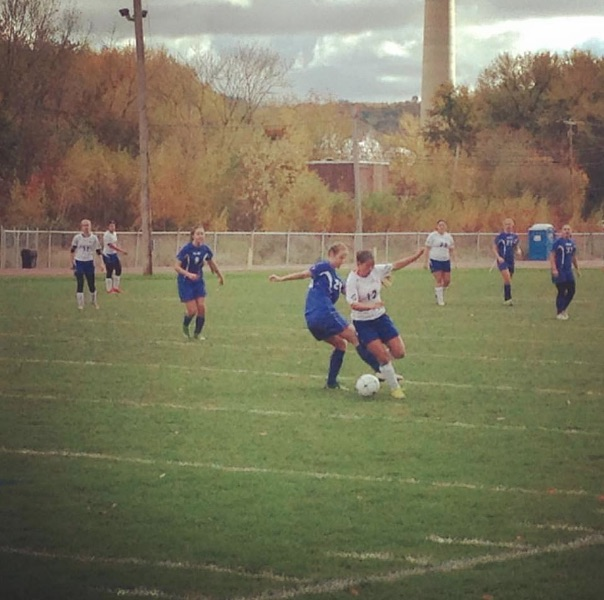
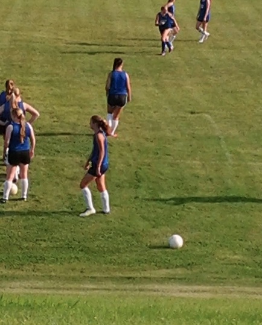

 Early Beginnings
- I first played soccer long before tennis at the early age of four.
- Like tennis, I played soccer trought middle school and high school.
- In college, me and my friends decided to make an intramural soccer team.
 New Favorite Sport
- This was the first year I watched the World Cup.
- I found that this is one of my favorite sports to watch on TV.